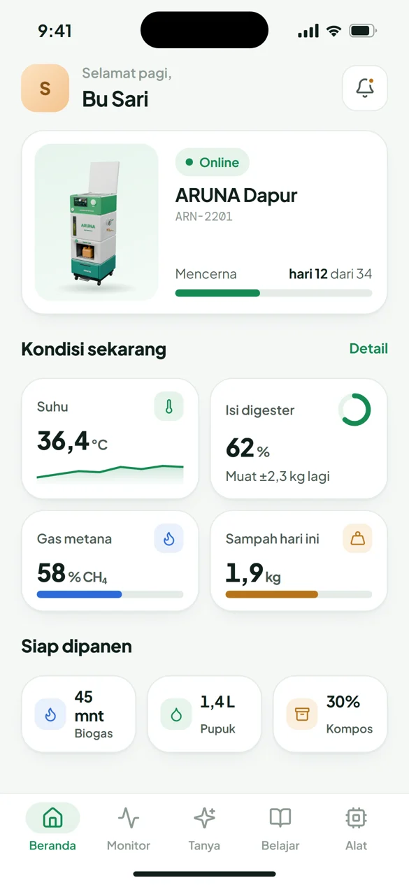

Ikuti perjalanan sisa makan malam jadi api biru, pupuk, dan kompos. Scroll pelan-pelan.
Di Indonesia, sisa makanan mendominasi isi TPA dan melepas metana saat membusuk.
Timbangan dan kamera di dalam mesin mencatat berat dan jenis sisa makanan secara otomatis.
Pencacah, pengaduk otomatis, dan sensor suhu, pH, dan metana menjaga fermentasi anaerob tetap ideal.
Aplikasi ARUNA mengirim kabar saat pupuk siap, laci kompos penuh, atau gas cukup untuk memasak.

Angka per siklus adalah target desain prototipe.
ARUNA: 44 × 44 cm, setinggi pinggang, beroda. Muat di pojok dapur.
Coba aplikasi ARUNA →Model karakter: “Casual Male 3D Character – T-Pose” oleh sthaarpit (Sketchfab, CC-BY 4.0), di-rig ulang dengan Rigify.